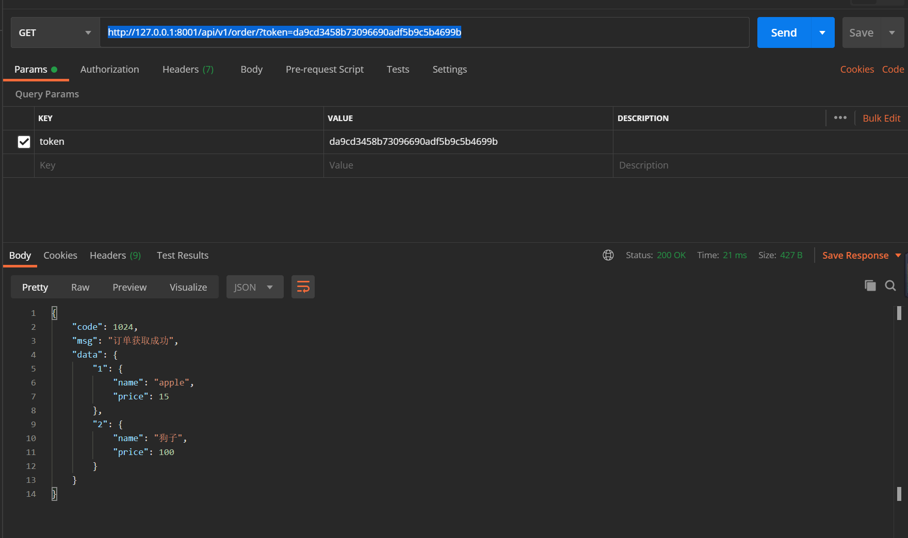

Contents
23.4.20. drf-认证¶
1.项目案例¶
1.1 生成项目¶
(1）新建Django项目并命名为django_app1，同时新建App，命名为app1。
在PyCharm中打开项目终端，安装相关依赖包：
pip install Djangorestframework markdown Django-filter pillow Django-guardian coreapi -i "https://pypi.doubanio.com/simple/"
然后将
django rest framework作为第三方包放入django项目中
INSTALLED_APPS = [
'django.contrib.admin',
'django.contrib.auth',
'django.contrib.contenttypes',
'django.contrib.sessions',
'django.contrib.messages',
'django.contrib.staticfiles',
'app1.apps.App1Config',
'rest_framework'
]
MIDDLEWARE = [
'django.middleware.security.SecurityMiddleware',
'django.contrib.sessions.middleware.SessionMiddleware',
'django.middleware.common.CommonMiddleware',
# 'django.middleware.csrf.CsrfViewMiddleware',
'django.contrib.auth.middleware.AuthenticationMiddleware',
'django.contrib.messages.middleware.MessageMiddleware',
'django.middleware.clickjacking.XFrameOptionsMiddleware',
]
1.2 数据库设计¶
先来看一下如果不使用drf怎么进行用户认证，通常是用字段验证的方式，来生成相应的数据库，在用户登录时候，对数据库查询，简单的数据库设计如下
from django.db import models
class UserInfo(models.Model):
USER_TYPE = (
(1,'普通用户'),
(2,'VIP'),
(3,'SVIP')
)
user_type = models.IntegerField(choices=USER_TYPE， default=1)
username = models.CharField(max_length=32)
password = models.CharField(max_length=64)
class UserToken(models.Model):
user = models.OneToOneField(UserInfo,on_delete=models.CASCADE)
token = models.CharField(max_length=64)
简单的用户信息，每个用户关联一个一对一的usertoken做为验证 然后在项目目录下执行生成数据库命令
python manage.py makemigrations
python manage.py migrate
1.3 路由系统¶
from django.contrib import admin
from django.urls import path
from django.conf.urls import url
from app1.views import AuthView
urlpatterns = [
path('admin/', admin.site.urls),
url(r'^api/v1/auth/$', AuthView.as_view())
]
api/v1/auth/中的api分别代表接口和版本号，后面会说到
1.4 视图函数¶
md5函数根据用户名和用户的访问时间进行加密
当用户第一次访问时，数据库创建用户，并将token``字符串，存储到数据库
当用户下次访问的时候，需要带着这个字符串与数据库比对，并返回相应的提示信息 这里的token
暂时没有放回浏览器端，真正项目中可以写入到浏览器cookie中
from django.shortcuts import render
from rest_framework.views import APIView
from app1 import models
import json
from django.shortcuts import render, HttpResponse
from django.http import JsonResponse
from django.views import View
def md5(user):
import hashlib
import time
# 当前时间，相当于生成一个随机的字符串
ctime = str(time.time())
# token加密
m = hashlib.md5(bytes(user, encoding='utf-8'))
m.update(bytes(ctime, encoding='utf-8'))
return m.hexdigest()
class AuthView(View):
def get(self, request, *args, **kwargs):
ret = {'code': 1000, 'msg': 'success', 'name': '偷偷'}
ret = json.dumps(ret, ensure_ascii=False)
return HttpResponse(ret)
def post(self, request, *args, **kwargs):
ret = {'code': 1000, 'msg': None}
try:
user = request.POST.get('username')
pwd = request.POST.get('password')
obj = models.UserInfo.objects.filter(username=user).first()
if not obj:
# 如果用户第一次登陆则创建用户
obj = models.UserInfo.objects.create(username=user, password=pwd)
ret['code'] = 1001
ret['msg'] = '创建用户成功'
# 为用户创建token
token = md5(user)
# 存在就更新，不存在就创建
models.UserToken.objects.update_or_create(user=obj, defaults={'token': token})
ret['token'] = token
except Exception as e:
ret['code'] = 1002
ret['msg'] = '请求异常'
return JsonResponse(ret)
第一次发送请求,返回请求信息
{
"code": 1001,
"msg": "创建用户成功",
"token": "25464d68d74d9128d830ca3cf1af248a"
}
第二次发送请求,返回请求信息
{
"code": 1000,
"msg": null,
"token": "68faf304a9a8f8af14ec549d12969880"
}
这里没有使用drf的认证组件
2. 使用Django rest framewok 认证组件¶
基于上面的例子，添加一个认证的类
2.1 url¶
path('api/v1/order/', OrderView.as_view()),
2.1 实例¶
假如用户想获取自己的订单信息，发送请求之后返回订单信息以json格式的数据返回。
from rest_framework.views import APIView
from django.http import JsonResponse
from rest_framework.authentication import BaseAuthentication
from rest_framework import exceptions
from app1 import models
# 这里直接表示订单
ORDER_DICT = {
1: {
'name': 'apple',
'price': 15
},
2: {
'name': '狗子',
'price': 100
}
}
class FirstAuthenticate(BaseAuthentication):
# 添加自己的认证逻辑，基类BaseAuthentication中有一个必须要重写的接口
def authenticate(self, request):
pass
def authenticate_header(self, request):
pass
class MyAuthenticate(BaseAuthentication):
# 添加自己的认证逻辑，基类BaseAuthentication中有两个必须要重写的接口
def authenticate(self, request):
token = request._request.GET.get('token') # 获取token参数
token_obj = models.UserToken.objects.filter(token=token).first() # 在数据库UserToken查找是否有相应的对象
if not token_obj: # 如果没有，则报错
raise exceptions.AuthenticationFailed('用户认证失败')
return (token_obj.user, token_obj) # 这里需要返回两个对象，分别是UserInfo对象和UserToken对象
def authenticate_header(self, request): # 返回相应头信息
pass
class OrderView(APIView):
# 用户想要获取订单，就要先通过身份认证、
# 这里的authentication_classes 就是用户的认证类
authentication_classes = [FirstAuthenticate, MyAuthenticate]
def get(self, request, *args, **kwargs):
ret = {
'code': 1024,
'msg': '订单获取成功',
}
try:
ret['data'] = ORDER_DICT
except Exception as e:
pass
return JsonResponse(ret)
这里继承了rest framek中的APIView，在APIView中将原生的request进行了封装，封装了一些用于认证，权限的类，
在请求来的时候，会依次通过FirestAuthenticate，MyAuthenticate两个类，并调用authenticate进行认证。
发送正确请求
发送错误请求
{
"detail": "用户认证失败"
}
2.3 源码分析¶
略..后续补充